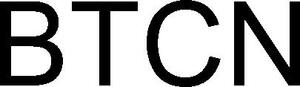

Trade Mark Journal No.2025/045 7 November 2025
WO0000001882400 (9,35,36,38,42)
Office of origin: Switzerland
Date of International Registration:3 July 2025
Date of designation in the UK:
3 July 2025

International priority date claimed: 20 January 2025
(Switzerland)
(825888)
- Class 9
- Computer hardware, firmware and software; computer software for blockchain-based mobile and wallet applications; computer software for blockchain-based data mining; computer hardware and software for blockchain technologies; downloadable computer software for managing transactions with crypto assets using blockchain technology; compilation software for blockchain, cryptocurrencies and digital assets; computer software for application and database integration; computer programs and computer software for electronic trading of securities; e-commerce software for processing e-commerce transactions via a global computer network; application software; application software for mobile telephones; application software for blockchains; computer software platforms; software for financial services and wealth management; software for cloud computing; software for buying, selling, trading, paying, triggering, storing and administering tokens; computer software for electronic commerce; downloadable electronic publications; calculating apparatus; downloadable computer software enabling the creation of decentralized software applications intended for use to assist blockchain technology; downloadable computer software enabling the creation of software applications intended for use with blockchain technology; downloadable computer application software for blockchain-based platforms; downloadable electronic publications in the field of blockchain technology; downloadable cryptographic keys for receiving and processing cryptocurrencies; software for creating blockchains; software for encryption; computer software for creating, managing, storing, analyzing and providing data in the context of public distributed ledger technology and in peer-to-peer payment networks in the field of cryptocurrencies, digital currencies, blockchain-based technologies and decentralized applications; software; data stored on electronic media, comprising programming languages, particularly for the creation and development of centralized and decentralized databases as well as for smart contract, blockchain, cryptography and other applications.
- Class 35
- Updating and maintenance of data in computer databases; compilation and systematization of data in databases; data processing services; advertising; company management; company administration; office functions; administrative management relating to the registration of digital image ownership; online provision of a marketplace for exchanging digital collectibles; marketing by product placement in virtual environments; intermediation in trading and retail sale for the benefit of third parties, including within the framework of e-commerce, for electronic and digital goods; making available and providing information and intelligence, as well as advice to consumers in the choice of products, services and/or digital assets; retailing of digital goods via global computer networks.
- Class 36
- Electronic payment processing; financial transactions online; online intermediation services for trading and transactions of currencies and other financial products; clearing (transaction settlement); computer-aided financial services; financial services; monetary operations, issuance and redemption of tokens; wealth management services for electronic tokens (cryptocurrency wallet, electronic wallet); financial services provided by electronic means; electronic transfer of cryptocurrencies and blockchain-based tokens; business incubator services, namely brokerage and organization of financial investments in start-ups and new businesses; financial services for blockchain, cryptocurrencies and digital assets; execution of financial transactions via blockchain; provision of financial information; electronic money transfer by means of blockchain technology; providing a digital currency for use by members of an online community via a global computer network.
- Class 38
- Providing access to electronic information, communication and transaction platforms on the Internet; providing access to databases and information via a global computer network; provision of access to computer networks, Internet platforms, databases and electronic publications; providing telecommunications connections to a global communication network or to databases; telecommunications; providing access to an e-commerce platform on the Internet; providing access to a collaborative platform; providing access to blockchain networks; transmission of encrypted communications.
- Class 42
- Software as a Service (SaaS); programming of software for Internet platforms; temporary provision of Web-based applications; design and development of computer software; design and development of computer hardware, software and databases; development and updating of computer software; development and testing of computing methods, algorithms and software; development and maintenance of database software; development of application solutions for computer software; development of programs for data processing; developing data processing systems; design and development of new technologies for third parties; advice in the field of computer software design and development; advice and research in the field of science, engineering and information technology; providing information on technological research; providing information and data relating to scientific and technological research and development; computer software research; research and development of computer software; control services for the certification of quality and standards; programming of software for e-commerce platforms; providing and renting software; provision and rental of non-downloadable software for financial services and wealth management; software design; hosting of e-commerce platforms on the Internet; provision of online non-downloadable computer software intended for use as a cryptocurrency wallet; computer platform as a service (PaaS) in the field of blockchain technology; provision of online non-downloadable software intended for creating software applications for use to assist blockchain technology; development of software for the blockchain industry, cryptocurrencies industry and digital assets industry; computer platform as a service (PaaS) with a decentralized software platform for enabling scalable computer solutions as well as the storage, deployment and operation of decentralized software applications; provision of non-downloadable computer software for producing and creating interactive media, video clips, photographs, music, data, visual effects, digital collectibles and crypto-collectibles on a blockchain network and digital files; provision of non-downloadable computer programs for electronic commerce, storing, sending, receiving, accepting and transmitting interactive media, video clips, photographs, music, data, visual effects, digital files, digital collectibles and crypto collectibles on a blockchain network; providing mobile software applications for authentication with the aid of blockchain-based software technology; providing interactive and non-downloadable online game applications for mobile devices; programming of software for creating an online community for registered users; user authentication using blockchain technology; blockchain as a service [BaaS]; programming of smart contracts on a blockchain; provision of application programming interface (API) software to facilitate and manage interactions between databases containing information on digital currency, cryptocurrency and blockchain technology; writing and developing programming languages; design, development and programming of software.
Bitcorn Foundation
Representative: MME Legal AG, Zollstrasse 62,, Postfach, CH-8031 Zürich, SWITZERLAND